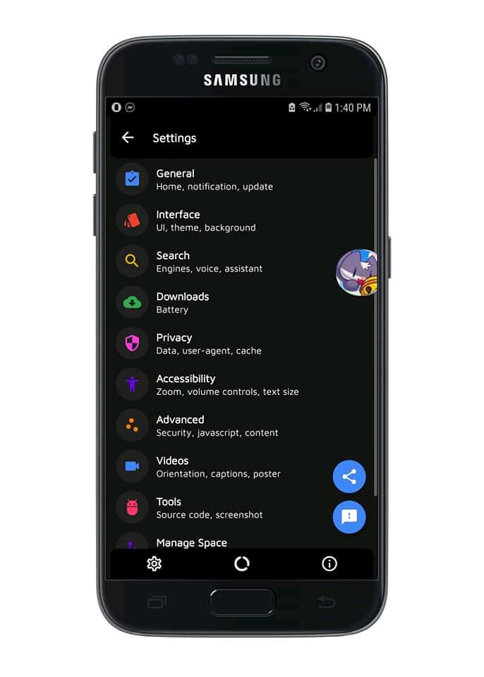
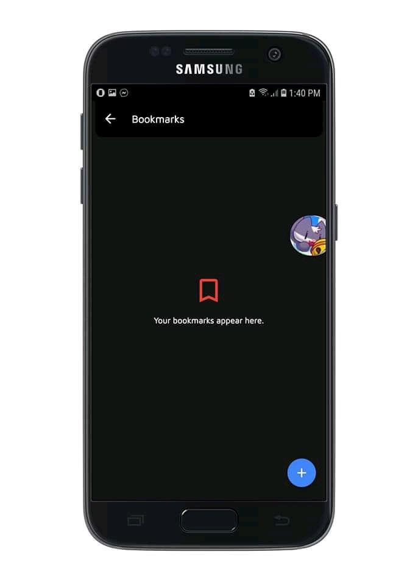
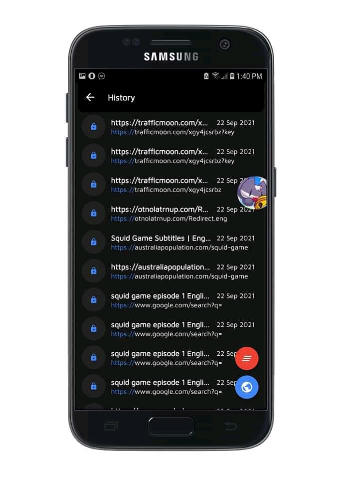
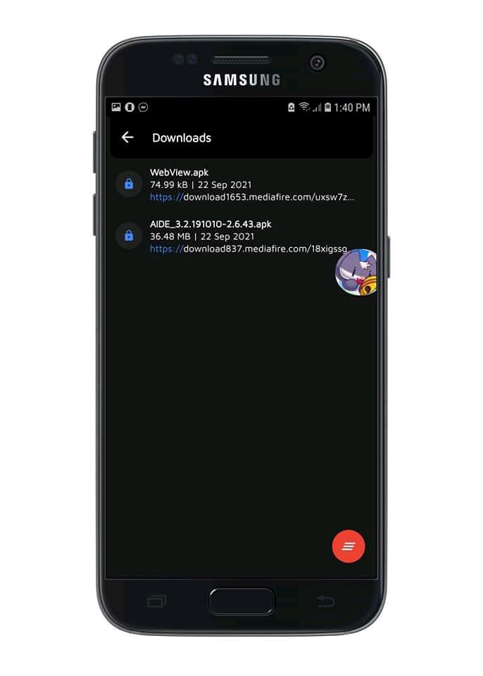
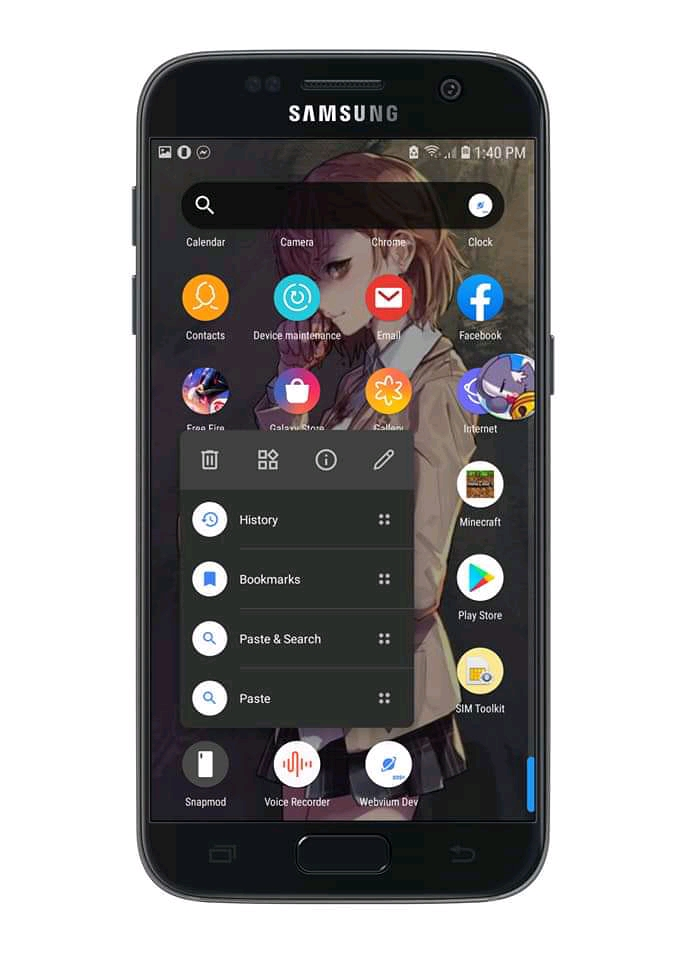

by amosayomide05
Posted on 2021-09-20
With the triumph of Software Engineering, Modern Programming Innovation and Improvements of Operating Systems, programming langauges, and Integrated Development Environments. We are able to achieved a astonishing results. Modern UI based on modern programmming style and algorithm. We created Webvium one of the most ultra high compress applications with modern utilities, features and UI styles in such 450KB size. Its a game changer in the world full of competitions.
Developed and Programmed by Melvin Jones Repol and Samiun Nafis tested by amosayomide05 & Jøhn Øye .
Build and Compiled in Android Studio & Aide
Open Source Under GPU GPL v3.0.
Programmed in Java XML Javascript HTML CSS
Databased in Sqlite and JSON.
Total Number of code line: Approximately 40 Thousands.
PS: THE SCREENSHOT PRODUCED & USED IN THIS POST WAS WEBVIUM V2.1 WHICH IS A DEV BUILD AND WILL BE RELEASED IN STABLE BUILD THIS OCTOBER.




